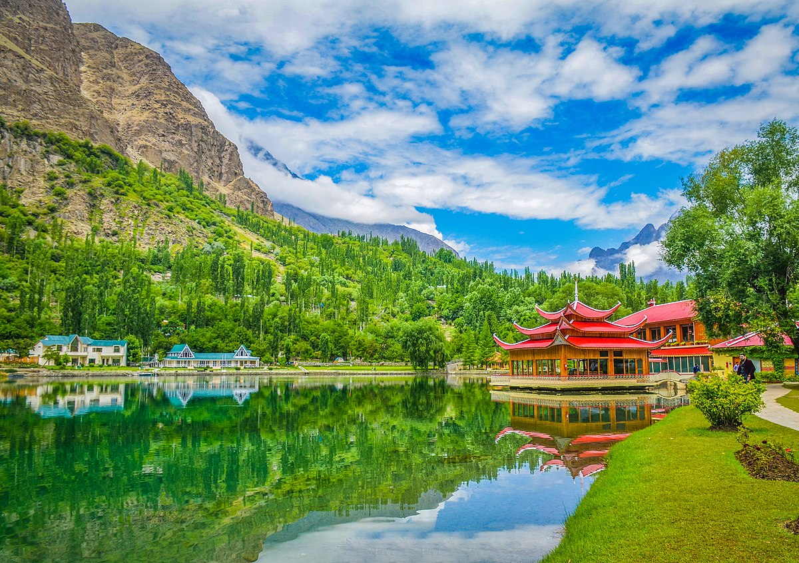

Mountain Scale
High-country landscapes create the visual foundation of the northern journey.

NORTHERN PAKISTAN · GILGIT-BALTISTAN
A northern journey of mountain roads, alpine valleys, turquoise water and nights beneath an open sky.
Explore the destination ↓Hunza & Naltar turn the northern road into the destination — a journey measured in valleys, mountain light and changing scale.
The supplied programme is a 10-day summer journey departing from Karachi and covering Naran, Attabad Lake, Naltar Valley, Hunza and Islamabad, alongside jeep rides, bonfire, trekking and star gazing.
The Nouvelliste Pakistan (Pvt.) Ltd. describes itself as a Government Registered and Licensed Travel Company with professional teams working to promote tourism in Pakistan.
The source frames the northern experience through breathtaking landscapes, impressive glaciers, vibrant culture and opportunities to capture memorable moments. This page keeps that source framing while presenting the destination as a premium editorial journey.
The destination and commercial information on this page is based on the supplied Naltar / Hunza tour source. Confirm current road conditions, fares and final programme details before departure.
The northern road becomes part of the experience as the landscape changes around you.
Attabad Lake adds a vivid turquoise element to the mountain journey.
A principal destination in the supplied programme, framed by high mountain terrain.
Bonfire and star gazing bring a slower, atmospheric close to the day's travel.
An asymmetric visual field designed for destination photography: wide landscapes, vertical mountain details and a cinematic motion panel.
Replace this panel with a muted, looping destination video for a cinematic opening.
Four details that give the supplied Naltar / Hunza programme its distinctive sense of place.
High-country landscapes create the visual foundation of the northern journey.
Attabad Lake brings a strong blue contrast to the surrounding mountain palette.
Jeep rides and trekking add movement and physical exploration to the itinerary.
Bonfire and star gazing create an atmospheric end to the mountain day.
One northern programme, several landscapes — from Naran and Attabad Lake to Naltar Valley and Hunza.
The supplied tour is a 10-day programme and lists a broad collection of places and experiences rather than a single-venue stay.
The supplied source lists Karachi as the departure point and provides separate Karachi–Islamabad transport fares.
Price from Islamabad to Islamabad, excluding two nights of Islamabad stay:
Rucksack, warm trousers and jacket, warm hi-neck, rain coat or parka, gloves, woollen socks and cap, sunglasses, water bottle, trekking stick, trekking boots or durable joggers, torch with extra batteries, power bank, charger, moisturiser, lip balm, insect repellent, tissues and basic personal first-aid medicines.
The source states that transport fares are based on actual provider prices and any increase is payable by the passenger. Air-ticket prices are based on actual prices at booking, and the source notes that costs may be adjusted in case of fuel-price fluctuation.
Published rates from the supplied Naltar / Hunza tour page. Confirm the final fare before payment because transport and fuel prices may fluctuate.
Important: The supplied page contains a Rs35,000/person headline and a separate detailed Islamabad–Islamabad rate table beginning at Rs52,000. Both are retained exactly as published rather than silently reconciled.
“Let the active hours breathe. The real luxury of the northern road is the contrast between movement in the mountains and the stillness of a bonfire-lit evening under the stars.”
A slow-travel reading of the supplied Naltar / Hunza programme
Tell us who is travelling and when. Our team can confirm availability, the current package rate and the most suitable transport option for the Naltar / Hunza journey.